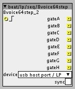
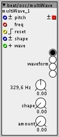

Forum profile : @beat
Contributor prefix: beat
objects:
beat/osc/multiWave.axo an oscilator with selectable waveform and modulateable "waveshaper"
beat/midi/ctrl/lpad/seq/8voice64step.axo turns your launchpad into an 8 voice 64 step sequencer

Forum profile : @beat
Contributor prefix: beat
objects:
beat/osc/multiWave.axo an oscilator with selectable waveform and modulateable "waveshaper"
beat/midi/ctrl/lpad/seq/8voice64step.axo turns your launchpad into an 8 voice 64 step sequencer

8 voice 64 step sequencer for the novation launchpad (tested with launchpad s).
Via the top-row of buttons the first, second, third, ... 8 steps can be selected (each row represents a single voice -> all 8 voices are displayed at once).
Via the side-row of buttons the first, second, third, ... voice can be selected (the 64 buttons represent the whole sequence).
push a button to enable/disable step.
Via the toggle button of the UI you can choose to sync to an extern midi clock.

multi waveform oscilator: sine, triangle, saw, square
each waveform (except sine) is able to change its shape (e.g. square = pwm).
the waveform can be selected via the wave-inlet or the radio-buttons.
the amount-dial defines the modulation-amount of the shape-inlet.
nice, the wave oscillator is a great idea, and the I like the idea of a 'controllers' specific step sequencers, axoloti is cool with grid controllers 
can I make a small suggestion... perhaps move the launchpad one, under midi/ctrl (midi/controllers), and also perhaps use something like lpad rather than lp, which is used under filters for low pass.
something like:
beat/midi/ctrl/lpad/seq/8voice64step.axo
i know not ideal, as makes the name longer, and something we do need to address in the patcher i think. in the future, we will have a better object browser (tags, better) , but at the moment, the hierarchy is the only ways to browse.
just a thought...
Wow that stepsequencer is extremely dope! Especially for building drum machines this is great!
Just some Ideas to make it even doper:
In most cases one doesn't need 64 steps. So it would be great if you could somehow set the step length.
Maybe by pressing the selected voice on the righ side and then selecting an excerpt of the 64 pattern. This would allow for dynamically setting sequence lengths. It would also be cool to have different lengths for each voice.
If all steps are on you don't see the walking light anymore. Maybe use different colours?
This is a more general Idea: The LP has a great potential for axoloti, since you could also use it for switching presets, represent modulation matrices, turn fx on and off, routing, etc. I am highly tempted to use your sequencer but it also uses the whole LP. It would be great to have a different "pages" that could be used for other stuff, little bit like with ableton. Especially since Axoloti only supports one USB controller. (and those are mostly the ones with the fancy leds  )
)
For drum machine builders: Live record input would be great
But really nice work, thanks for sharing!
i am glad you like it! most of the things you listed above are definitely on my to do list:
variable seq-length per voice is coming! i like the way you suggested to set the length (this was a thing i was unsure about).
right at the moment the whole sequencer runs monochrome. this is related to the fact that this object is my first attempt of coding a sequencer for axoloti and that i wanted it to be as efficient as possible. (But a polychrome version is coming)
this is a first try. but i am planing to do a more advanced version with several sequencers integrated (monophone, polyphone, drumseq, and also something i would call a harmony-sequencer) and control-options (toggle-switches, momentary-buttons, faders, ...). but with this object my first goal was to create an easy to use seq (no sub menus, no button-combinations, so that you don't get lost).
live input is maybe something for the advanced version (first i have to figure out how to achieve something like that)
for a next update i plan to implement:
@beat
Cool all of this sounds really promising and is going to turn axoloti into a true musical beast
I think this depends on wether you want to quantize or not. Quantized is pretty easy, you just have to check on wich step you are when live input comes, and if there is no step yet, activate that step.
I think this is a little bit what steptoggle by @rbrt here does:
That sounds like a solid development plan Multiple sequence lengths would be awesome, think about all the crazy polyrhythms you could make
Excuse me... how can I download [get!] this amazing OSC object? I'm new to this, my apologies!!! THX!!
Great BEAT!! thanks!!! apologies for the newbie question... I appreciate!!! I Just did... THIS ROCKS SO BAD!!!
Nice to hear! I got inspired by all the korg minilog reviews and i liked the idea of an equivalent to pwm for other osc types.
Thanks for the multiwave! I get pretty bad aliasing though. Try selecting saw. Go above 1 khz and you get aliasing. A non aliasing version would be nothing short of amazing:) I dont want to sound ungrateful at all! Thanks for all the things you do:)
Or is there some way i can upsample/downsample to not get aliasing? Please enlighten me:) The mulitwave is super cool
Oversampling has to be done within the object. There's currently no way to transfer oversampled audio between objects apart from in parallel, but that requires objects designed for that purpose.
Ok. Will have to wait for the OP to make a non aliasing version then:) (if he chooses to do that)
Really like the multiwave, nice one 
What number values are needed on the wave input to get it to move from one waveform to the next? If I wanted to use a midi controller to switch from one to the next for example? Seems to be 16, 32, 64 etc
sorry for the long delay... i was busy working on the launchpad sequencer stuff. i made a huge progress since the last post and i am happy to share my current state of it in the next week with you (just want to test it with 1.0.10, since i developed it with .9)
to the multiwave topic:
this object was my first attempt of coding axoloti objects. i never done DSP programing before, so my approach was quite naive (i looked in the sine osc and thought every waveform could be represented as a mathematical function derived from a ramp generator). i didn`t thought about stuff like aliasing (and i am not totally familiar with the concepts behind it).
so the project multiwave osc is currently paused until i finished the launchpad project (i think i can use my knowledge more effectively for the whole MIDI stuff)
but i really appreciate your interest and looking forward to dive into the whole DSP-coding theme.
HI!! I´m traying to use your 8voice64step with no luck.
Can you give me a basic patch example of this object???
Thanks!